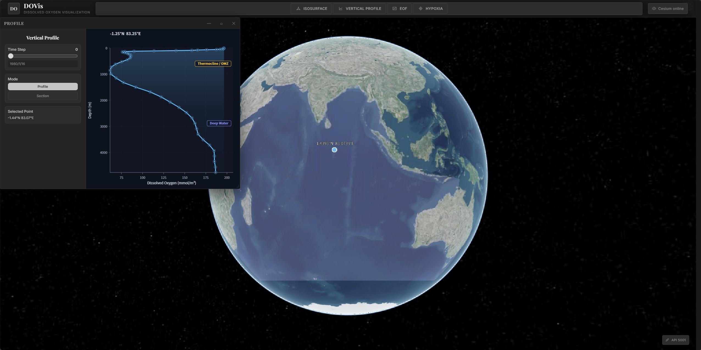
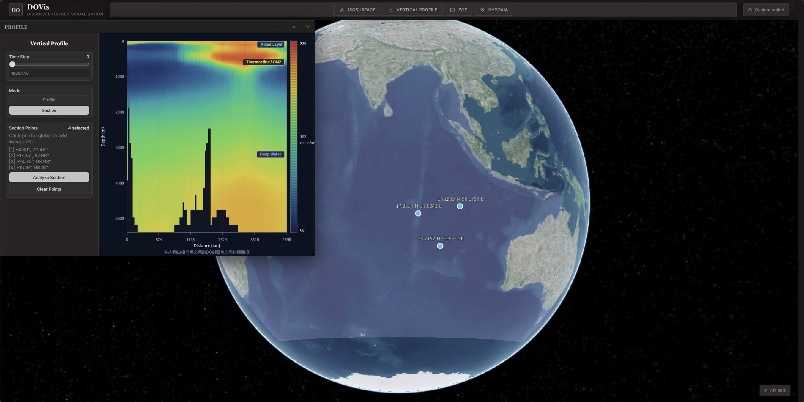

功能设计 · Function
Module 02
垂直剖面分析 Profile
单点模式：点击 Cesium 球面获取经纬度，后端 xarray 最近邻插值返回垂直氧含量曲线
断面模式：连接多点生成剖面线，后端沿线插值输出距离-深度二维氧分布场
垂直曲线使用 Canvas 2D 自绘，标注 Mixed / Thermocline / Deep 三水层分带
断面热力图采用 8 节点连续 colormap，双线性插值实现平滑着色
Cesium 点选
xarray 插值
Canvas 2D 自绘
断面热力图
水层分带


数据流